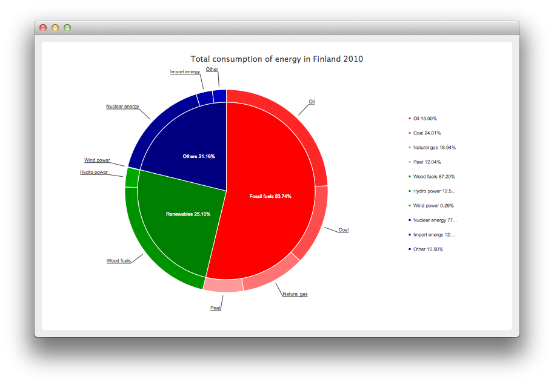

Creating a Donut Breakdown Chart
Note: This is part of the Charts with Widgets Gallery example.

Creating Donut Breakdown Charts
Let's start by defining some data for the chart.
// Graph is based on data of 'Total consumption of energy increased by 10 per cent in 2010' // Statistics Finland, 13 December 2011 // http://www.stat.fi/til/ekul/2010/ekul_2010_2011-12-13_tie_001_en.html auto series1 = new QPieSeries; series1->setName("Fossil fuels"); series1->append("Oil", 353295); series1->append("Coal", 188500); series1->append("Natural gas", 148680); series1->append("Peat", 94545); auto series2 = new QPieSeries; series2->setName("Renewables"); series2->append("Wood fuels", 319663); series2->append("Hydro power", 45875); series2->append("Wind power", 1060); auto series3 = new QPieSeries; series3->setName("Others"); series3->append("Nuclear energy", 238789); series3->append("Import energy", 37802); series3->append("Other", 32441);
Then we create a chart where we add the data. Note that this is our own chart derived from QChart.
auto donutBreakdown = new DonutBreakdownChart; donutBreakdown->setAnimationOptions(QChart::AllAnimations); donutBreakdown->setTitle("Total consumption of energy in Finland 2010"); donutBreakdown->legend()->setAlignment(Qt::AlignRight); donutBreakdown->addBreakdownSeries(series1, Qt::red); donutBreakdown->addBreakdownSeries(series2, Qt::darkGreen); donutBreakdown->addBreakdownSeries(series3, Qt::darkBlue);
Our own chart works in such a way that we create a main series in the constructor we create a main series, which aggregates the data provided by the breakdown series. This is the piechart in the center.
DonutBreakdownChart::DonutBreakdownChart(QGraphicsItem *parent, Qt::WindowFlags wFlags) : QChart(QChart::ChartTypeCartesian, parent, wFlags) { // create the series for main center pie m_mainSeries = new QPieSeries; m_mainSeries->setPieSize(0.7); QChart::addSeries(m_mainSeries); }
When a breakdown series is added the data is used to create a slice in the main series and the breakdown series itself is used to create a segment of a donut positioned so that it is aligned with the corresponding slice in the main series.
void DonutBreakdownChart::addBreakdownSeries(QPieSeries *breakdownSeries, QColor color) { QFont font("Arial", 8); // add breakdown series as a slice to center pie auto mainSlice = new DonutBreakdownMainSlice(breakdownSeries); mainSlice->setName(breakdownSeries->name()); mainSlice->setValue(breakdownSeries->sum()); m_mainSeries->append(mainSlice); // customize the slice mainSlice->setBrush(color); mainSlice->setLabelVisible(); mainSlice->setLabelColor(Qt::white); mainSlice->setLabelPosition(QPieSlice::LabelInsideHorizontal); mainSlice->setLabelFont(font); // position and customize the breakdown series breakdownSeries->setPieSize(0.8); breakdownSeries->setHoleSize(0.7); breakdownSeries->setLabelsVisible(); const auto slices = breakdownSeries->slices(); for (QPieSlice *slice : slices) { color = color.lighter(115); slice->setBrush(color); slice->setLabelFont(font); } // add the series to the chart QChart::addSeries(breakdownSeries); // recalculate breakdown donut segments recalculateAngles(); // update customize legend markers updateLegendMarkers(); }
Here's how the start and end angles for the donut segments are calculated.
void DonutBreakdownChart::recalculateAngles() { qreal angle = 0; const auto slices = m_mainSeries->slices(); for (QPieSlice *slice : slices) { QPieSeries *breakdownSeries = qobject_cast<DonutBreakdownMainSlice *>(slice)->breakdownSeries(); breakdownSeries->setPieStartAngle(angle); angle += slice->percentage() * 360.0; // full pie is 360.0 breakdownSeries->setPieEndAngle(angle); } }
The legend markers are customized to show the breakdown percentage. The markers for the main level slices are hidden.
void DonutBreakdownChart::updateLegendMarkers() { // go through all markers const auto allseries = series(); for (QAbstractSeries *series : allseries) { const auto markers = legend()->markers(series); for (QLegendMarker *marker : markers) { auto pieMarker = qobject_cast<QPieLegendMarker *>(marker); if (series == m_mainSeries) { // hide markers from main series pieMarker->setVisible(false); } else { // modify markers from breakdown series pieMarker->setLabel(QString("%1 %2%") .arg(pieMarker->slice()->label()) .arg(pieMarker->slice()->percentage() * 100, 0, 'f', 2)); pieMarker->setFont(QFont("Arial", 8)); } } } }
Instead the main level slices show the percentage on the label.
DonutBreakdownMainSlice::DonutBreakdownMainSlice(QPieSeries *breakdownSeries, QObject *parent) : QPieSlice(parent), m_breakdownSeries(breakdownSeries) { connect(this, &DonutBreakdownMainSlice::percentageChanged, this, &DonutBreakdownMainSlice::updateLabel); } ... void DonutBreakdownMainSlice::updateLabel() { setLabel(QString("%1 %2%").arg(m_name).arg(percentage() * 100, 0, 'f', 2)); }
Now that we have our chart defined, we can finally create a QChartView and show the chart.
createDefaultChartView(donutBreakdown);